| |
Top 10 Worst Coasters

Welcome to an Incrediblecoasters Top 10 List. When we list stuff, we actually explain why. Or I should say Bottom 10 List since todays topic is the Top 10 Worst Coasters ever built. Now many people in the enthusiast community will complain about the coaster snob. The person who will nit-pick a ride to death and say "Oh, this kickass ride sucks. I don't like the way the sun glares on it. It should've had this teeny insignificant X factor built in, blah blah blah." And yeah, those type of people are annoying, but they are pretty rare. But then there are the enthusiasts on the opposite end of the spectrum. The enthusiasts who can not criticize any ride for any reason. They have this attitude of "I am a coaster enthusiast and I love roller coasters. Therefor, I love everything that is a roller coaster. Yeah, some may be better than others, but as long as its a roller coaster, it can not suck and must be fantastic." Yeah, these people are also very rare, but man do they piss me off. I'm sorry, I know everyones entitled to their own opinion and all, but that attitude just really really really pisses me off and it pisses me off for several reasons. First off, I'm against any sort of blind following. And yes, if you approve of something for an arbitrary reason such as I must like this since it's a coaster, and therefor must be great, you are blindly approving of something. Second of all, it's an insult to coasters that are actually good. Imagine a food critic who was a Pizza Enthusiast say "I love Pizza. Therefor, any pizza that anyone ever makes is delicous. I don't care if your pizza is made from sh*t and covered in mold. It's a pizza, and therefor, delicous." Yeah, you'd never take any of their pizza reviews seriously just as I never take anything any coaster enthusiast with this attitude says seriously. And finally, if people are cool with sh*t, then parks will buy the cheap sh*t since it's cheap, and people like it and will eat it up. Yeah, yeah. Coaster Enthusiasts don't have any effect since we're not the main demographic and that the GP has way more power, but still. And I'm here to completely retaliate and fight against this idea by exposing the 10 worst coasters I've currently been on (and I've been on a lot). So get ready. Bow your head in shame and bend over cause I'm about to rip you a new one. These are the 10 Worst Coasters Ever.
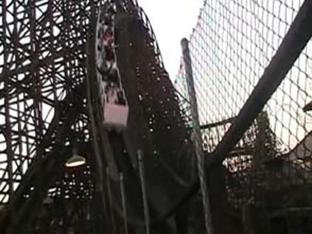
#10.
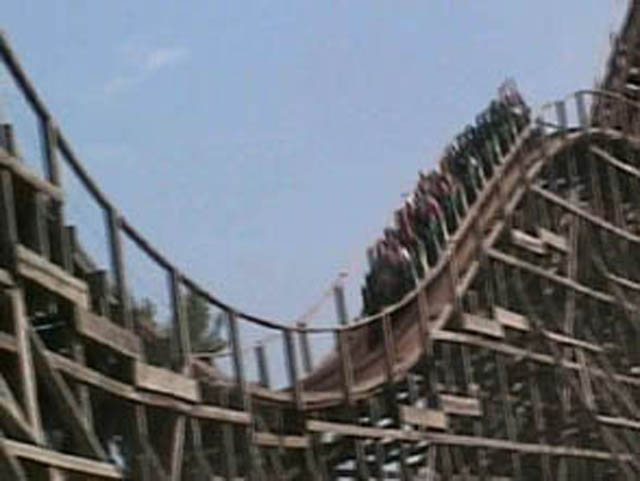
Mean Streak @
Cedar Point
Sandusky, Ohio, U.S.A
Located right next to one of my favorite coasters of all time, Maverick, this thing is a real emberassment to Cedar Point and its roller coaster collection and shouldn't be seen with Cedar Point's other rides, let alone be the next door neighbor to Maverick. I know they removed several other coasters, such as Wildcat and Disaster Transport before demolishing Mean Streak (one upside of this list. A LOT of these horrible coasters are now gone). Now, it seemed frustrating at the time to have it still standing. But with Steel Vengeance replacing it, it was worth the wait. So what exactly was wrong with this ride? Well, to make a long story short, IT'S UNCOMFORTABLE AND BORING!!! But this doesn't have ANYTHING to it. At least with former worst coaster ever, Son of Beast (New terrible coasters have sadly been built, knocking Son of Beast off the list), that at least had a decent pre-lift and a fun first drop. This doesn't even have that. The first drop is trimmed so there's no speed and the rest is just slow shuffling. Hell, not even the General Public likes this ride!!! This was the only ride at Cedar Point with a walk on wait when I first visited. I mean, I waited longer for the Derby Down than for this thing. But luckily, Cedar Point wound up giving Mean Streak the RMC treatment, and let me tell you. It was worth the wait. Because Steel Vengeance is not just an improvement, but one of my favorite coasters ever. No really. It's on our Top 10 Steel Coasters. Getting one of the worst coasters ever replaced by one of the best coasters ever is easily without a doubt, the greatest upgrade ever. And it's right next to Maverick. Another favorite of mine. So yeah. Good riddance Mean Streak. Long live Steel Vengeance.
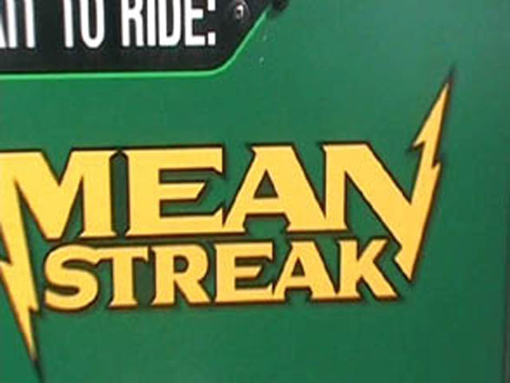
#9.

Anaconda @
Walygator Parc
Maizières-lès-Metz, Lorraine, France
Yep, another uncomfortable and boring woodie over here. As you can tell, I really don't like these types of rides, and this sure as hell is a bad one. Anaconda, or as I like to call it, French Grizzly is a HORRIBLE HORRIBLE COASTER!!! It seriously is just like Grizzly @ California's Great America (Grizzly sucks, but with so many new horrible coasters, I couldn't justify it being on here anymore. For as dumb and boring Grizzly is, at least it's not painful, which the other coasters that replaced it can not claim). They pracically feel like clones! Like Grizzly, the ride is so slow that the continents are drifting away at faster speeds than this hunk of sh*t. And like Grizzly, its fairly uncomfortable with some shuffling going on and some pokes to the side (This is MUCH rougher than Grizzly). So they're practically the same ride. So it seems like they should be tied. Well there is one thing about Anaconda that makes it worse than Grizzly. You notice how Anaconda has much bigger drops and more drops and less weird straight shuffle track? Yeah, unlike Grizzly, Anaconda was not designed to be super slow and boring. The ride does in fact have speed. So great. Problem solved right? Except no. That makes it MUCH MUCH worse from what I've heard. I heard from people who rode it before they slowed it down that it BEAT THE EVER LIVING SH*T OUT OF YOU!!! So to deal with the complaints of everyone coming off in pain, they slowed it down to a crawl so it'd stop hurting everyone. You heard it right. They have it bore you to death to prevent it from beating you to death. They destroyed it to prevent it from killing you. Talk about a design failure.
 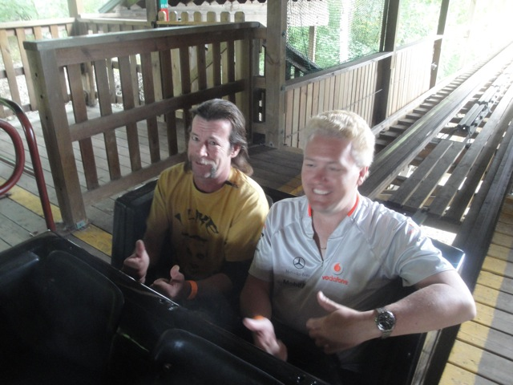 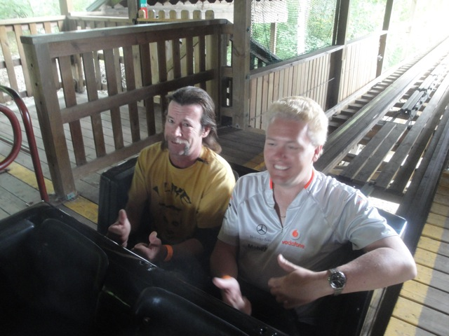
#8.
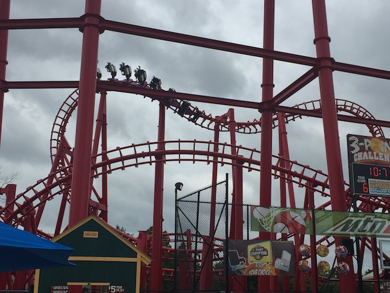
T3 @
Kentucky Kingdom
Louisville, Kentucky, U.S.A
Now some of you may be wondering why THIS ride is on the list. Why THIS specific SLC? And wait a minute. I thought you thought that SLCs were underrated and got too bad of a reputation by other coaster enthusiasts. If that is the case, then why is an SLC on here for Worst Coaster? While it is true that in general, I don't hate SLCs NEARLY as much as your average enthusiast. However, not all SLCs are created equal. And while some SLCs are genuienly fun rides and aren't rough at all, T3 is the exact opposite. This ride.....HOLY SH*T!!! SO F*CKING BAD!!! Now this is the 2nd SLC ever, and the first one ever constructed in the United States. So....Vekoma still hadn't quite worked out all the kinks in the ride. And....let's just say that this ride had A LOT of them. To say this thing is rough is an understatement. This thing is full of potholes, made with rubber bands and chewing gum, and jolts you so much that it's one of the rare rides where I grabbed the restraint of of sheer "OH SH*T!!!". Honestly, the only reason this ride isn't higher is because of the new trains that eliminate headbanging. If it had the original trains, this thing would probably be in the Top 3 Worst Coasters. Even with new trains meant to make the ride smoother and stop the pain, this thing still ranks the 8th Worst Coaster ever. That's how bad this peice of sh*t is.
 
#7.

Thunderbolt @
Coney Island
Brooklyn, New York, U.S.A
If you first glance at the ride, this doesn't seem like a bad coaster. It looks like a fun coaster with a vertical drop, some cool inversions, and even a few airtime hills. It looks exactly like the Eurofighters, a type of ride I generally think highly of. So why is this ride on here? Well, you know that old saying. Looks can be decieving. And they sure as hell are decieving with this ride. First of all, the ride just isn't designed that well. Zamperla is generally known for smaller coasters, with this being their first attempt at a truly adult roller coaster. And....much like T3, this ride has A LOT of kinks that need to be worked out. The design of this ride needs a lot of work. But that is only made so much worse by some of the worst restraints on ANY coaster. First of all, the lap bar is extremely uncomfortable, pinching you like a giant plastic crab. Padding Zamperla. Please invest in it. Not everything has to be plastic. But on top of that, it has these seatbelts that function as OTSRs. These things are simultaneously both too loose and too tight. They both pin you down, while still allowing you to be flung around like a rag doll, giving you the worst of both worlds. And on a ride whith some inversions that twist and give laterals, that leads to a REALLY BAD TIME. Hell, I've heard stories about the ride being so rough that it literally gave some random kid a nosebleed injury. Not a good sign for your ride. Let's hope that Zamperla fixed out the bugs with the clones of it. But regardless, f*ck this ride.
 
#6.
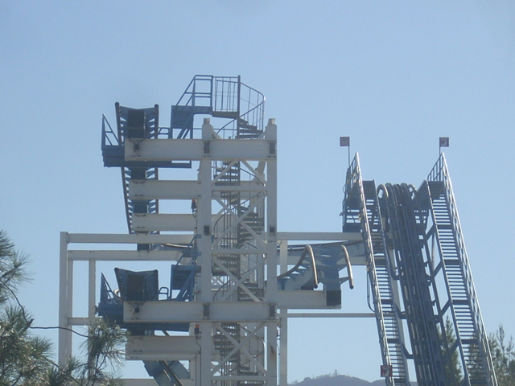
Flashback @
Six Flags Magic Mountain
Valencia, California, U.S.A
All right, we've now reached the even worse coasters. Yeah, the other coasters before this were pretty damn bad, but now we're gonna start talking about the ones that physically try to murder you. And man, did Flashback ever try. This is a coaster that despite being located at my home park, I was lucky to ever get the credit. I only saw it run twice in my entire life. The first was before I was a coaster enthusiast and I wasn't interested. And then the second time, I decided to hop on. I should've known that it was going to suck when it was PACKED that day to the point where we were parking at the end of the overflow and Revolution had a 45 minute wait, but Flashback was a walk on despite those crowds. That should've warned me to stay away and that it was horrible. But I rode it anyway. Its been so long since I rode that its hard to remember. All I remember is pain, lots of pain, lots of screaming, and all of us sitting on a bench for 10 minutes afterward to recover. Now Flashback is gone. Long long gone. You'd never even guess that anything was ever there nowadays. But it was there, though it got taken out in Early 2008. And before that, it was just sitting there SBNO. In fact, the last reports I ever heard of it running were in April 2003, which is coincidentally when I rode it. So its entirely possible that I rode Flashback on its last day of operation. But yeah. Nobody misses it. It was rejected by Six Flags Great America and Six Flags Over Georgia before heading to Six Flags Magic Mountain before being turned into scrap metal. So if you see anything made of metal recently, spit on it, because it could possibly contain reminents of this horrible monstrosity.
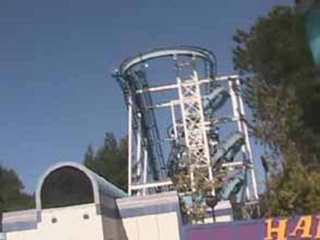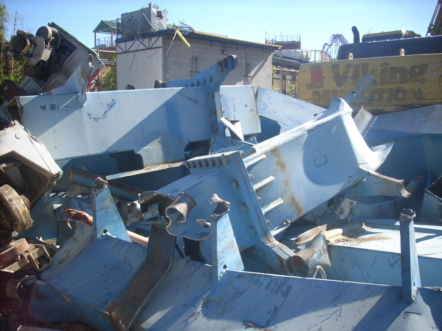
#5.

Ninja @
Six Flags St. Louis
Eureka, Missouri, U.S.A
Yeah. Its time for another super painful coaster that tries to beat you to death. This one would be Ninja @ Six Flags St. Louis. It acts like a Ninja, just sitting there harmlessly, waiting to be ridden so you can have fun or at least just brace another crappy Vekoma and add it to your count. But WHAM!!! THIS THING IS HORRIBLE!!! I can not think of any positive qualities about this ride. I mean, at least Flashback was unique. But this, this is just horrid. You bang your head on every single turn. Every single bump, every single move is a nice big SLAP on your head. It's all horrible. The Sidewinder gives you a nice SMACK. The corkscrews keep spanking your head, mistaking you for a spoiled brat, this for a time era where we should all spank kids, and your head for your ass. But to add insult to injury, it's not even that interesting. So even if it didn't try to kill you, it'd still suck as it has a horrible layout and doesn't really do anything. Just some slow inversions, some clunky turns, and that clunkiness results in PAIN!!! SERIOUS SERIOUS PAIN!!! Bring Advil. You'll need it.
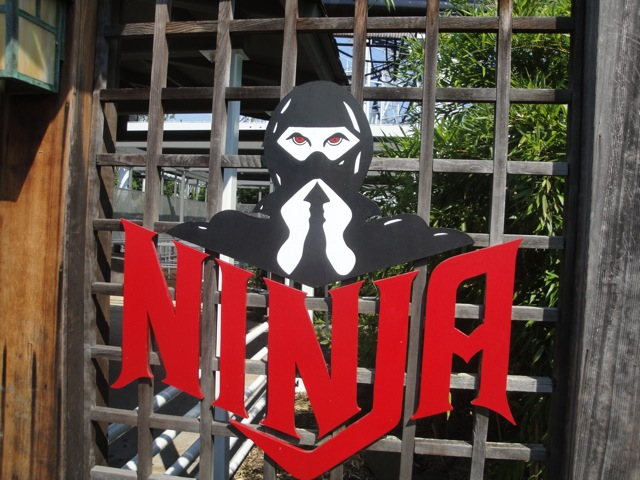
#4.

Wild Beast @
Canada's Wonderland
Vaughan, Ontario, Canada
Yeah. The deeper we go into this list, the worse and worse they get. And man, does it ever get bad here. If you thought Flashback and Ninja hurt, they were just softening you up so Wild Beast could REALLY take a sh*t on you. I know that in my Canada's Wonderland Update, one of my captions said the following. This thing is slower than Mean Streak, Rougher than sleeping on a broken glass bed, and more disgusting than sex with the Evil Millenium Force Ride Operator." And yeah, the first two statements are totally true. It really is slower than Mean Streak (which is saying something), and rougher than sleeping on a bed made of broken glass. As for the last statement, I'm sick of talking about that topic. Just read my Wild Beast review for my rebuttal of that last statement. I'm sick of talking about that. Anyways, onto Wild Beast. Yeah, you know Grizzly? You've probably heard me complain a lot about that ride. It used to be on this list. Yeah. Picture that ride, all the slowness and all the boringness. Yeah, its horrible. Now add in the ride shaking you the way a breeder shakes a baby with what feels like the ride trying to cheese grate your ass onto the ground. Yeah. That gives you a pretty good idea about whats wrong with Wild Beast. All the time it would spend boring you is just the time Wild Beast gives you to nurse your injuries before it just f*cks with you again. Stay the hell away from this ride. Just stick to Behemoth, Leviathan, or hell, ANYTHING is better than Wild Beast!!!
#3.

Bandit @
Movie Park Germany
Bottrop, North Rhine-Westphalia, Germany
Yeah. They're just getting worse and worse. You keep thinking that oh, a coaster can't get any worse than worse. What could be worse than Wild Beast? Well, let me introduce to this monstrosity known as Bandit. Remember when I mentioned that another ride I rode used the old Son of Beast Trains, yep. This ride still uses them, and it is horrible. Just thinking of these trains on Son of Beast sends shivers down my spine. This ride is so rough and so violent that you'd think that its a leftover reminent of Nazi Germany that the park just decided to keep for the sake of money despite the ride feeling like it was designed for a Concentration Camp. Not only does this ride shiver, shake, and smack, but it also has headbanging. Can you imagine? Headbanging on a wooden coaster! Now granted, this is not typical headbanging. The sides of your head are safe. Bandit prefers to get you through the back of your head. Your head bobs back and forth, and when it goes back, it SMACKS against a rock hard headrest. No plastic, no cushioning, just your head going SMACK SMACK SMACK while your brain is most likely doing the same thing smacking your skull. So lets see, you've got the head smacking into the plastic rock hard headrests, you've got constantly shuffling everywhere, jackhammering everywhere, and a giant lap bar that squeezes the blood out of your legs. Yeah. This sounds awful. I bet you all can't wait for the amazingness of the next two horrid rides.
 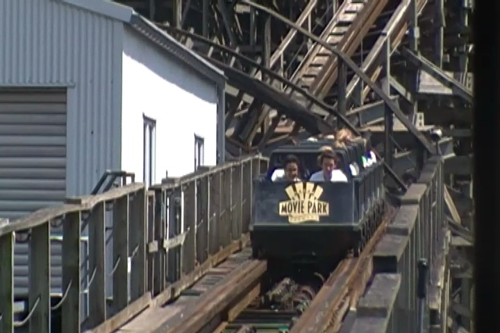 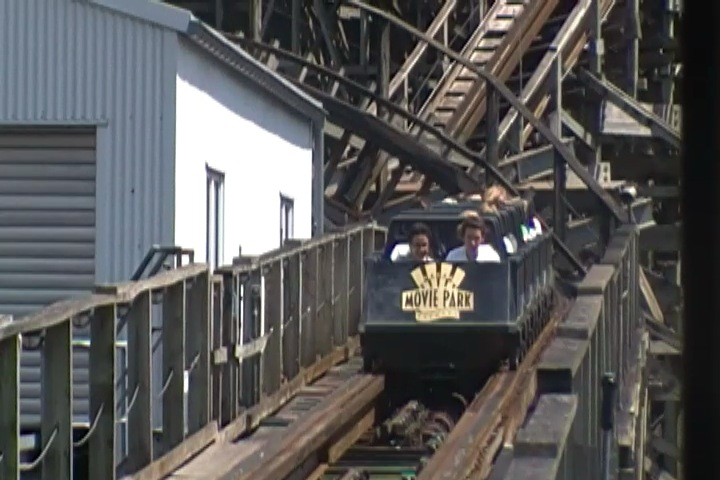
#2.

Dragon @
Adventureland
Altoona, Iowa, U.S.A
Ok, hold on a second. I'm gonna have to go get some advil because just talking about this ride is going to give me a big migrane. Yeah. It's really that bad. Dragon was one of the most mysterious coasters on the planet in the question of how the hell such innocent and harmless elements can be so monsterous and brutal and painful. The bunny hops out of the station. Just tiny little harmless dips. That can't possibly hurt you. That is until you ride Dragon. I mean, at least all the other rides pre-lifts and lifthills don't hurt. You're pretty safe on those rides until the first drop. Not Dragon. The ride is not very long, so it must take advantage of every precious second that the ride has to try and crack your head open like an egg to make a breakfast of scrambled brains. I mean, this is stuff that normal kiddy coasters do, and its causing some nasty headbanging just on these itty bitty bumps. And once we actually, go down the main first drop and really gain speed. Ouch, just ouch. Its gonna hurt. Its really gonna hurt. These restraints are not soft at all. They're pretty damn hard and plastic. And overall, this ride just flat out sucks. Even without the pain, it'd still suck. Its got a small first drop, two loops, a helix, and yeah. Thats pretty much it. It couldn't even do anything. I would complain about how short the ride is, but with this ride, the sooner it ends, the better. The only reason its memorable at all is all the pain. Yeah. It's just flat out awful. Thank god Adventureland tore it down. I don't care how they run the Free Spin that replaced it. That could be the worst Free Spin ever, and it'd still be a GIANT improvement over the abomination that used to reside there.

#1.
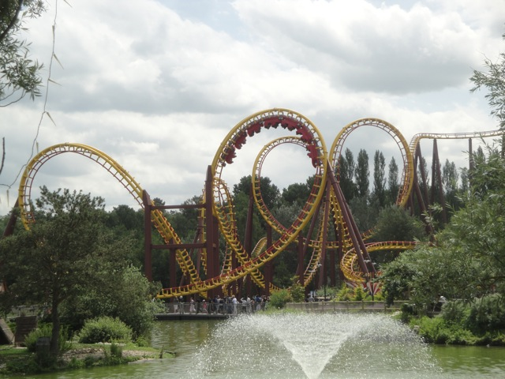
Gouderix @
Parc Asterix
Plailly, Picardie, France
Yeah. With Dragon being so wretched and horrible, it seems hard to top. Thats what I thought after I first got off Dragon. "I don't think anythings gonna top this. This is truly horrible." Well, 2 years later, I went to Europe and rode this nightmare coaster. And yeah. Just like Dragon, it is a monster in headbanging. The ride is literally doing a drumroll with your head. Its just constant pain from first drop to the brake run. And yeah. Just look at it. Yeah, it's a beautiful looking ride. But at the same time, do any of those elements seem natural? They practically seem like they were designed to hurt you. Like no coaster should ever have any of these elements. But for as horrifying as the headbanging is, its not what made it even worse than Dragon, as frankly, I don't think its possible to beat Dragon for headbanging. Gouderix matches it, but thats as all you can do. Now to top Dragon, Gouderix will hurt you in places most rides won't ever think of hurting you. It goes for your arms as well. I mean you always hear about headbanging. You hear about head shaking. You hear of shuffling and jackhammering. You even hear of the occasional testicular pain, still have yet to ride a coaster to cause that (the key word being coaster). But I have never once heard of anyone complaining about arm pain. And this thing f*cking murdered them. I mean, my headache from the headbanging was completely gone within 10 minutes. My arm still hurt from Gouderix when I came back to America. It hurt me that bad. And luckily, I managed to take a POV of this horrible ride, so I always show it to myself if I ever say "Was it really as bad as I remember or am I just exxagerating?" *watches my own POV* Yeah, my memory is currently correct. So you'll all get to laugh at me or cringe with pity when you see the video of me on Gouderix. Its a very clean G-Rated POV. =) But thats not even the astonishing part. I knew that it was going to be bad since its always had a reputation as one of the worst coasters in the world by other enthusiasts. What baffled me is seeing the three hour line for it. THREE HOURS!!! WHO THE F*CK WANTS TO WAIT THREE HOURS TO HAVE THEIR HEAD DRUMROLLED AND THEIR ARM ATTEMPTED TO BE BROKEN!!? I luckily had a fastpass so I didn't have to wait to suffer, and I'll give you a fastpass and just hurt you right now if you want so you don't have to wait three hours for Gouderix to do it for you. But yeah. Seeing that line really makes me question the intellenge of the French. OK. This is the pot calling the kettle black. At least the French didn't elect an orange dumbass fascist manchild. Hey, maybe they're just in it for gloating rights. I mean, how many people will believe you when you claim you've ridden the worst coaster on the planet? Nah, still not worth it.
 
So now I'm sure you know what you're thinking. "Wow. That was the list. That is so wrong." Well no. First of all, this list can not be entirely accurate since I haven't ridden every single coaster in the world, so until I do, this list will never truely be accurate. And new ones will be made, so technically, no list will last forever. But really, do you want this list to change? This is one Top 10 List I hope stays this way forever. I get very excited when I have to update my Top 10 Wooden Coasters List, or my Top 10 Steel Coasters List, or my Top 10 Theme Parks List. Because something amazing came along and beat what I had previously considered to be the best, meaning I now know that even better stuff exists and that the best is even better than I thought. However, I really hope this list just stays frozen like this forever. Because you saw how horrible all those coasters are. Do you really want more horrible rides to be built? Do you really want to see a new Dragon or Gouderix? I want the new coasters I experience to be better! Not worse! Thats just backwards wishing! Now if you're someone who likes any of these coasters and are complaining about how I completely shat on your favorite ride? Well, first of all, It's just my opinion. If you like Dragon, or Wild Beast, or Bandit, or Gouderix, or any of these, fantastic. Love it for all I care. Just never expect me to take any roller coaster advice from you ever. =) Second of all, you're probably a sado-masachist. Third, this would be a very underrated coaster for you as none of these are popular with other enthusiasts. My picks aren't that shocking to most enthusiasts. Believe it or not, I do know someone who actually liked Dragon. But luckily, there's some good news. You may have noticed something about this list. Much of these coasters have been demolished since....parks realized that these rides suck, and don't want them in their park. Mean Streak, Flashback, and Dragon are now all gone. So 3 of these 10 coasters are now offically demolished. 3 down, just 7 more to go.
|